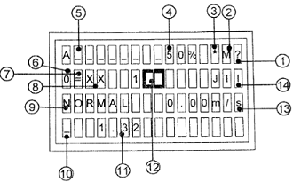
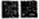
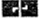
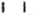

EUROLIFT

| Etat du téléchargement du logitiel LON/BIO"%"clignotant=Téléchargement du logitiel"?"=Les noeuds LON ou BIO doivent être figés"?"clignotant=Commande "Freezze Node Tree" en cours"!"clignotant=Echec de la commande "Freezze Node Tree""!"=Détection d'un nouveau noeud ou disparition d'un noeud LON/BIOAucun symbole="Freezze Node Tree" effectué et aucun changement d'état des noeuds | |
| M=Ascenseur Maitre sinon rien | |
| *clignotant="service Visite"actif | |
| Charge en cabine en % de la charge nominale | |
| Nom ou numéro de l'ascenseur | |
| Etat de l'entraînement:"0"=Entaînement à l'arrêt"+"=Entaînement en accélération"="=Entaînement à vitesse constante"-"=Entaînement en décélération"F"=Entaînement indisponible"?"=Etat inconnu | |
| Etat de la cabine"="=Arrêt de la cabine dans la zone de porte"#"=Arrêt de la cabine en dehors de la zone de porte"fleche montée"=Déplacement montée"fleche descente"=Déplacement descente"?"=Etat inconnu | |
| Position de la cabine | |
| Statut de la manoeuvre:En cas de défaut de la manoeuvre le numéro de l'erreur est afficé en alternance | |
| En cas de coupure de courant:Tiret en bas : la cabine est sous le niveau le plus procheTiret en haut : la cabine est au dessus du niveau le plus proche | |
| En cas de coupure de courant,distance du niveau le plus proche | |
Etat des porte1/2 = Côté de la porte = Porte ouverte = Mouvement de fermeture = Mouvement d'ouverture = Porte ouverte = Mouvement de fermeture = Mouvement d'ouverture = Porte visuellement fermée = Porte verrouillée = Porte arrêtée = Etat inconnu |
|
| Vitesse de la cabine.En cas d"erreur de l'entraînement le numéro de l'erreur est affiché en alternance avec le statut de l'entraînement | |
| Etat de la manoeuvre/Service |